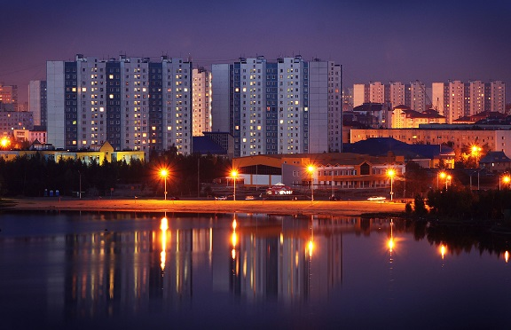

HarvardX CS50 pset5
Nizhnevartovsk is a city in Khanty-Mansi Autonomous Okrug, Russia. Since the 1960s, the Western Siberian oil boom led to Nizhnevartovsk's rapid growth from a small settlement to a city due to its location beside the Samotlor oil field along the right bank of the Ob River, 30 kilometers (19 mi) from the border with Tomsk Oblast, and the presence of the petroleum industry has made it one of the wealthiest cities in Russia.
Winters are cold and humid, and prevailing wind patterns that blow from the South. The daily mean temperature in January, the city's coldest month, is −25.8 °C (−14.4 °F). Summers are typically warm and humid, but short, with a daily mean temperature of 18.2 °C (64.8 °F) in July. Transitional seasons are short.
Nizhnevartovsk is one of the few cities in Russia that exceeds the population of the administrative center of its federal subject: 251,694.
